Pourquoi Windows affiche ça ?
L'installeur Elysia Client n'est pas encore signé/vérifié par Microsoft. Windows Defender SmartScreen peut donc afficher un message d'avertissement, même si le fichier téléchargé est bien le bon.
Launcher premium, auto-install Fabric, 100 modules clean, HUD editor, resource packs, shaders, serveurs, comptes et social réunis dans une seule expérience cohérente.
L'installeur Elysia Client n'est pas encore signé/vérifié par Microsoft. Windows Defender SmartScreen peut donc afficher un message d'avertissement, même si le fichier téléchargé est bien le bon.
Vérifie simplement que tu as téléchargé le launcher depuis cette page ou depuis le Discord officiel Elysia Studios, puis conserve le fichier et lance l'installation manuellement.
Si tu veux confirmer le bon téléchargement, utilise uniquement client.elysiastudios.net, la page GitHub Releases officielle ou le Discord discord.gg/elysiastudios.
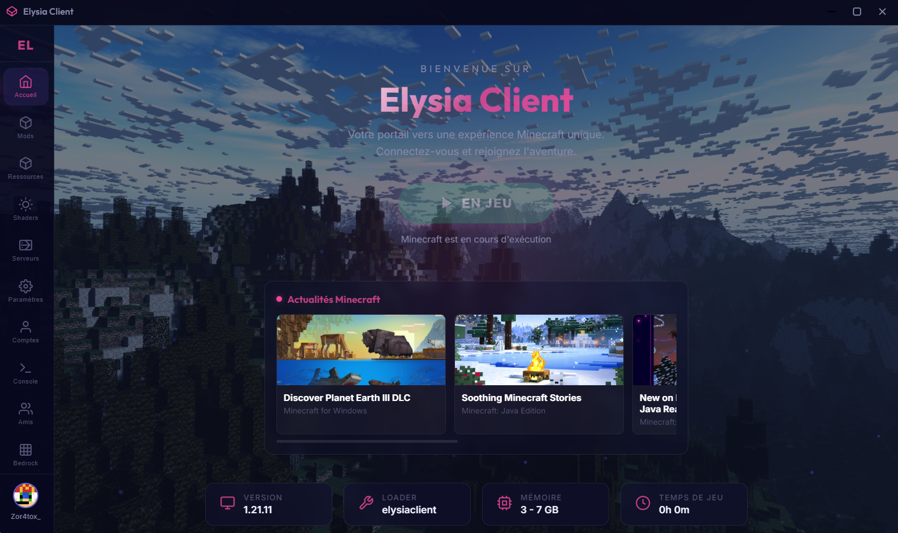
Un écran d'accueil massif, lisible et immédiatement reconnaissable.
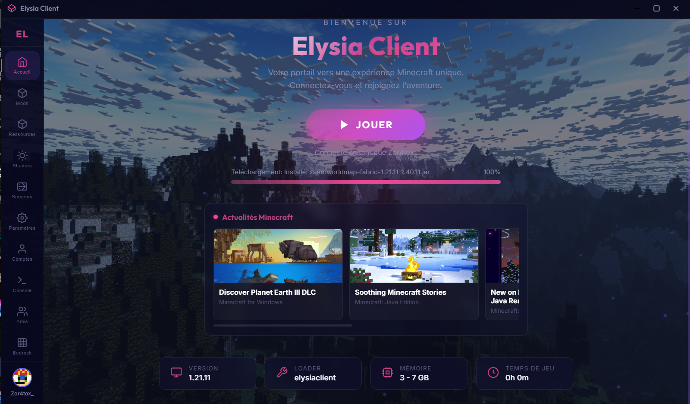
Elysia Client reprend les codes d'un vrai produit premium : profondeur, lumières, contraste, lisibilité et captures mises en scène comme un cockpit de jeu.
Logo, rose néon, nuit bleutée et verre teinté donnent une vraie présence au launcher.
Chaque page a son rôle, chaque bloc est lisible et l'ensemble reste propre même quand il y a beaucoup d'infos.
Halos, relief, profondeur, micro-transitions et responsive propre pour garder la même aura partout.
Parcours l'interface onglet par onglet pour voir comment Elysia gère le jeu, le contenu, les comptes, les serveurs et la partie communauté.
Tout part d'ici : bouton principal, progression d'installation, news Minecraft, état du jeu et infos de configuration dans une interface propre et très lisible.
Le launcher ne s'arrête pas à Java. Il propose aussi une vraie page Bedrock avec lancement, connexion rapide et mise en avant des usages cross-platform.
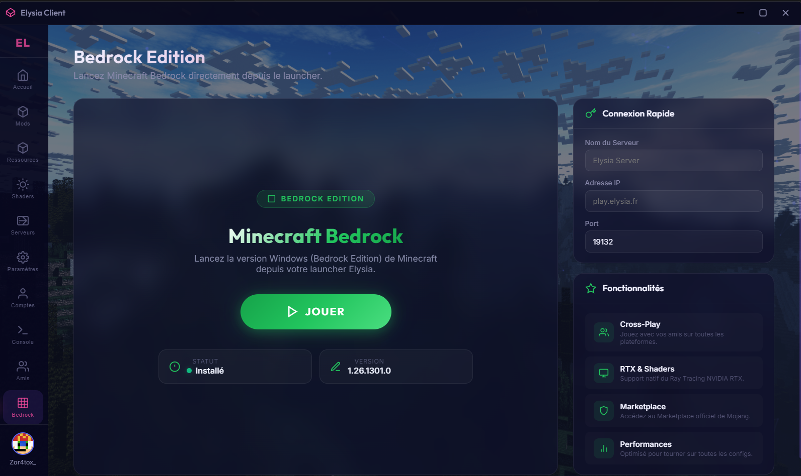
L'utilisateur voit tout de suite ce qu'il installe, pourquoi ce pack existe et ce qu'il apporte en performance, confort ou gameplay.
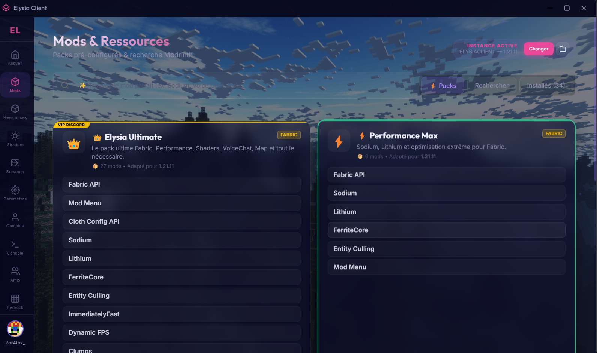
Cette vue est faite pour la découverte. On comprend immédiatement qu'il est possible de chercher, choisir et enrichir son setup sans sortir du launcher.
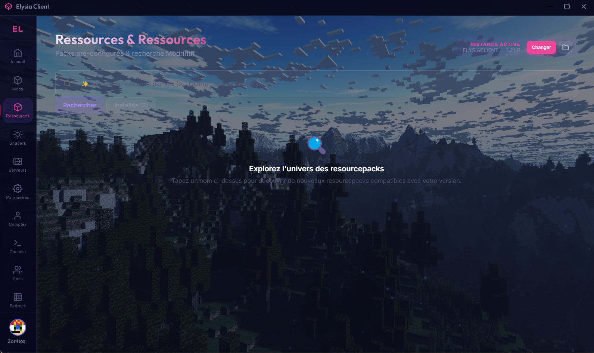
Cette page valorise le rendu graphique dès le premier regard et place la qualité visuelle comme une part entière de l'expérience.
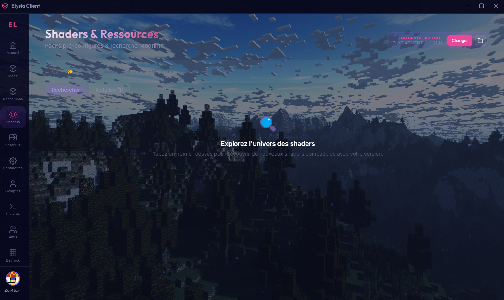
Ping, population, identité du serveur et action rapide : l'essentiel est visible instantanément dans une mise en page très propre.
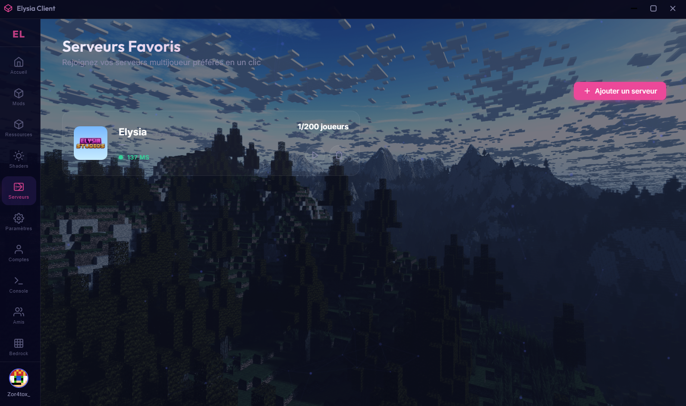
RAM, Java, affichage, loader et options de lancement sont organisés dans une interface nette, rassurante et bien hiérarchisée.
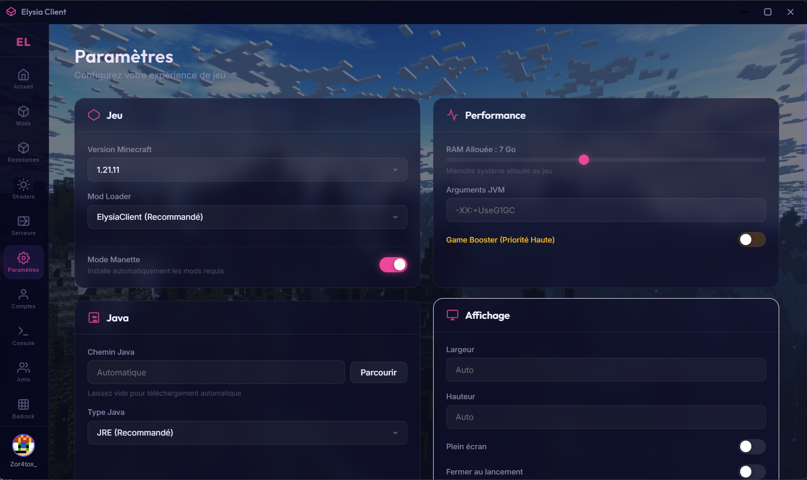
Compte Microsoft, compte local, avatar, skin et ajout de profil sont rassemblés dans une page claire, valorisante et simple à utiliser.
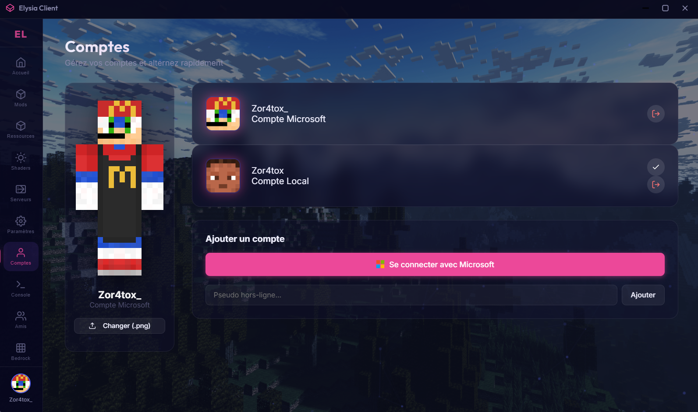
Ajout d'amis, demandes et liste sociale donnent au launcher une vraie dimension communautaire et renforcent la sensation d'écosystème.
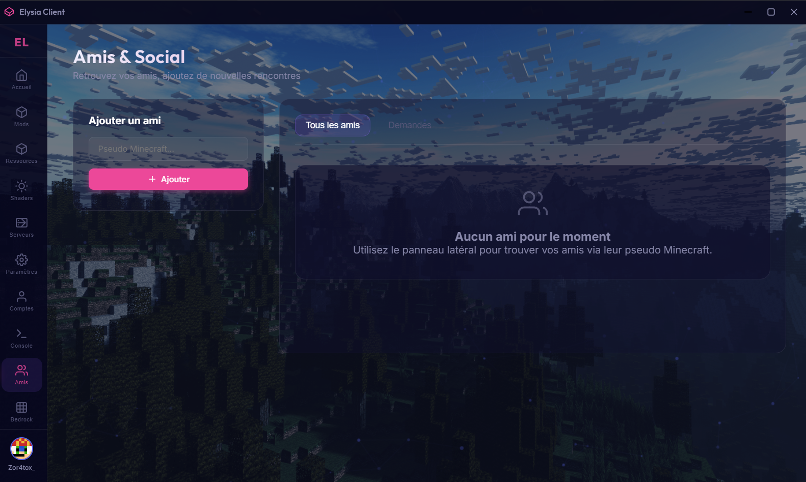
Le client ne s'arrête pas au launcher. ClickGUI, HUD editor, modules QoL, branding visible et ambiance propre au projet : l'expérience reste Elysia jusque dans le gameplay.
L'idée est simple : le joueur lance Minecraft, ouvre le menu et comprend tout de suite où sont ses modules, ce qui est activé et comment personnaliser son HUD sans se perdre.
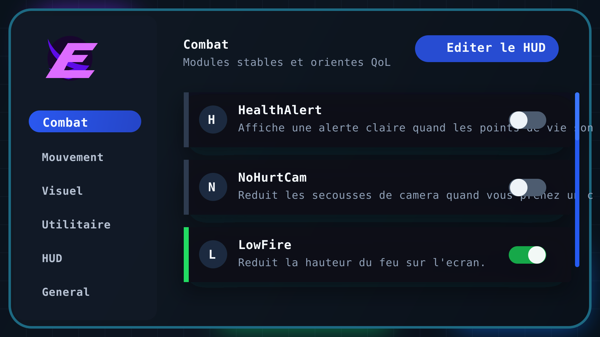
Analyse tes combats en temps réel sans polluer ton écran. Le Smart Fight module calcule tes coups, tes échecs, la distance et les dégâts pour t'offrir un résumé de combat (Fight Summary) net et précis après chaque affrontement.
Qu'il s'agisse de PvP classique ou de Crystal PvP, le module analyse tes actions de manière transparente. Dès que le combat se termine, un résumé détaillé apparaît pour te montrer tes statistiques exactes : précision des coups, portée moyenne et statistiques de combat.
Elysia Client combine une forte identité visuelle, des modules utiles, une installation automatique et une sensation de qualité constante dans chaque partie du produit.
Nouveau logo, teintes violettes, nuit profonde, halos lumineux et UI in-game créent une image forte et différenciante.
Des modules différents et utiles pour remplir chaque catégorie sans partir sur du cheat.
Un menu in-game lisible, brandé Elysia, avec catégories, toggles et modules faciles à comprendre.
Le joueur voit les vraies zones du HUD, déplace les éléments et garde une interface propre.
Le launcher installe le mod automatiquement quand le loader ElysiaClient est sélectionné.
Java, Bedrock, comptes, social, ressources, shaders et serveurs restent dans le même univers.
Le site met maintenant l'accent sur l'essentiel : le produit, son niveau de finition, le téléchargement et l'accès immédiat au Discord Elysia Studios.